October 2021
The revision of the Nationally Determined Contribution (NDC) is in line with the objectives pursued by the Government of the Central African Republic within the framework of the National Recovery and Peacebuilding Plan (RCPCA), the main planning instrument country strategy. It consolidates the achievements of the first generation of NDC and significantly improves it from a methodological point of view.
It is based on the probable consequences of climate variations and changes projected for 2030, the evolution to date of emissions and absorptions of greenhouse gases, the impacts and existing and potential vulnerabilities, for:
Describe a trend scenario (or Business as Usual-BAU Scenario ) of greenhouse gas emissions over the 2010-2030 cycle in the most emitting sectors: Energy; Agriculture, forestry and other land uses (AFOLU); industrial processes; Waste ;
Propose mitigation measures likely to bend the trend curve according to an unconditional scenario (investments granted by the State) and a conditional scenario (additional investment needs required from the international community)
Identify, according to a conditional scenario and an unconditional scenario, the adaptation measures in the most vulnerable sectors (Agriculture, Energy, Forestry, Water Resources, Health, Land use planning, Infrastructure and housing), in line with the objectives pursued through sector planning.
It thus appears, according to the trend scenario, an evolution of greenhouse gas emissions from 10,040 GgeCO2 in 2010 to 14,141 GgeqCO2 in 2025 and 17,644 GgeqCO2 in 2030. The sequestration capacity over the same horizons is respectively 730,714 GgCO2 and 733,607 GgCO2.
The mitigation measures taken will generate, according to the unconditional scenario, a reduction in greenhouse gas emissions of 9.03% and 11.82% respectively by 2025 and 2030 compared to the reference situation; and according to the conditional scenario 14.64% and 24.28% by 2025 and 2030 compared to the reference situation.
CAR's NDC builds on the existing inventory of short-lived climate pollutants (SLCCPs), to broaden the spectrum of gases covered, in addition to greenhouse gases. Organic carbon emissions, which (CO) represent 61.9% of total PCCVD emissions, would experience a significant decline under the effect of the proposed mitigation measures at the same time as the other PCCVDs (13.67% at -55 ,31% depending on the type of pollutant by 2030).
With regard to adaptation measures, the targeted actions proposed in the most vulnerable sectors should allow, by 2030, a decline in the impacts and a reduction in the vulnerabilities generated by current and future climate change.
The financial needs associated with the implementation of all the actions thus described are estimated at $1.764 billion, including:
$1.32 billion for mitigation: $236 million unconditional and $1.08 billion conditional;
$443.87 million for adaptation: $44.38 million unconditional and $399.48 million conditional.
The monitoring of the implementation of mitigation and adaptation measures and of the support received in terms of technology, capacity building and financing, is ensured through a measurement, notification and verification system based on the national SDG monitoring system. This MRV system facilitates, among other things, the updating of inventories and the periodic reporting of the progress made by the CAR to the United Nations Framework Convention on Climate Change (UNFCCC).
AEP: Drinking water supply
AFOLU: Agriculture, forestry and other land uses
AR6: Sixth Assessment Report (AR6) of the Intergovernmental Panel on Climate Change (IPCC)
CLTS: Community-Led Total Sanitation
BAU: Business As Usual
UNFCCC: United Nations Framework Convention on Climate Change
NDC: Nationally Determined Contribution
CO: Organic carbon
CO2: Carbon dioxide or carbon dioxide
NMVOC: Non-methane volatile organic compounds
CH4: Methane
DGEP: General Directorate of Studies and Planning
DGEPC: Directorate General for Studies, Programming and Control
DGPC: Directorate General for Civil Protection
DPEN: National Energy Policy Document
HFCs: hydrofluorocarbons
ICAESS: Central African Institute for Statistics and Economic and Social Studies
ICRA: Central African Institute for Agronomic Research
GHG: Greenhouse gas
HDI: Human Development Index
LPG: Liquefied Petroleum Gas
MDERH: Ministry of Energy Development and Hydrological Resources
MRV: Measurement, Notification, Verification
MTPER: Ministry of Public Works and Road Maintenance
MURFVH: Ministry of Town Planning, Land Reform, Towns and Housing
NOx: Nitrogen oxides
N2O: Nitrous oxide or nitrous oxide
SDG: Sustainable Development Goals
IPUP: Industrial Processes and Product Use
PCCDV: Short-lived climate pollutants
PM10; PM 2.5: Particles in suspension
PNIASAN: National Agricultural Investment Program for Food and Nutritional Security
NAP: National Adaptation Plan
NTFP: Non-timber forest products
SODECA: Central African water distribution company
RCPCA: National Plan for Recovery and Consolidation of Peace
SDRASA: Strategy for Rural Development, Agriculture and Food Security
SNAT: National Spatial Planning Scheme
The revision of the CAR NDC responds to the urgency for ambitious action in the face of the global climate crisis and the rise in global temperature.
In line with the first NDC of 2016 and the relevant provisions of decisions 1/CP.21, 4/CMA.1 and 9/CMA.1 of the United Nations Framework Convention on Climate Change (UNFCCC), the revised NDC confirms the country's aspiration to make a significant contribution to global efforts to combat climate change. This second generation presents significant advances compared to the first:
The formulation process was carried out in an inclusive manner, involving the various actors grouped around a multi-stakeholder Committee ensuring the strategic management and validation of the results, and sectoral working groups (six in total), responsible for proposing and/or amending the contribuions proposed, in terms of attenuation and adaptation. Thus, the data collected from primary suppliers is of better quality. Processing and analysis relied on the expertise of the official bodies in charge of sector statistics.
It covers more sectors and gases:
The sectors and sub-sectors covered include, in addition to those of the first generation, transport, mining, land use planning and housing, in accordance with the recommendations of the evaluation report of the first NDC.
Greenhouse gas coverage has been extended to hydrofluorocarbons (HFCs), in addition to carbon dioxide (CO2), methane (CH4) and nitrous oxide (N2O). Better still, short-lived climate pollutants (SLCPs) have been taken into account, because of their potential role in reducing global warming.
The revised NDC relies on an improved and more robust database to estimate the emissions and removals of the reference scenario: the time series used is presented with annual data, unlike the first NDC, where the results summed over the time series 2003-2010, show overestimates, particularly in the Agriculture, Forestry and Other Land Use (AFOLU) sector. Also, the trend scenario or BAU scenario is more realistic and more credible, because it is built on more disaggregated and quality data, and covers more sectors.
The implications of the corrections indicated above are a revision of the emissions of the trend scenario compared to the first NDC. They are 10,040 GgeCO2 in 2010 and 17,643 GgeCO2 by 2030.
The greenhouse gas emission reduction ambitions of the revised NDC are, in relative value, higher compared to the previous one (24.28% by 2030 compared to the trend scenario, compared to 5% for the first NDC). In absolute value, this reduction is less significant: it is 4,284.42 GgeCO2 against 5,500 GgeCO2 for the first NDC.
The proposed mitigation measures incorporate the most realistic measures of the first NDC and consolidate them with new measures.
Adaptation planning is made more robust by measures based on targeted objectives, consistent with sectoral objectives.
A measurement, notification and verification system is proposed.
In view of the improvements that the review process has made possible, the CAR has in the medium term (horizon 2030) an effective tool for steering public actions that take into account the projected effects of climate change, and the means to mitigate these effects. effects.
The climate in the Central African Republic is characterized by an upward trend in average annual temperature of around 0.3°C per decade, which began in the 1970s1. This variation, differentiated according to the climatic zones, increases more rapidly from 50s especially in the southwestern areas. Over the past thirty years, annual precipitation has shown a slight upward trend estimated at 8%2. This relative increase is accompanied by an upward trend in extreme events materialized by the increase in the number of rainy days with 10 mm of precipitation over the same period. The most marked climatic hazards in recent years have been storms, floods (South-West areas3), and droughts (in the North). Climatic conditions remain favorable to epidemics linked to bacterial and viral diseases. The probability of occurrence of annual epidemics of meningococcal meningitis during the dry season remains very high in the northern part which is in the meningitis belt.
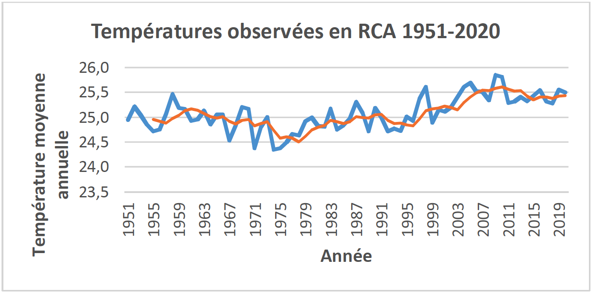
Figure 1: Temperatures observed in CAR 1951-2020 (Source: CCKP, 2021)
Figure 2: Average annual rainfall observed in CAR: 1951-2020 (Source: CCKP, 2021)
| cmip5 | Projections according to an RCP 8.5 scenario4 | ||||
| Sightings (1986 to 2005) | Horizon 2030 | Horizon 2050 | Horizon 2070 | Horizon 2090 | |
|
Annual temperature anomaly (°C) |
+0.35°C per decade |
+0.7 to +1.5 (+1.1°C) |
+1.4 to +2.7 (+1.9°C) |
+2.3 to +4.2 (+2.8°C) |
+3.1 to +5.7 (+3.8°C) |
|
Annual precipitation anomaly (mm) |
+8% |
-18.4 to +21.9 (0.8mm) |
-21.0 to +29.6 (1.7mm) |
-21.5 to +38.5 (5.5mm) |
-28.2 to +50.4 (6.6mm) |
|
Heavy rain (%) |
-2 to +14% |
-2 to +22% |
|||
|
Drought periods (days) |
-9 to +3 days |
-15 to +3 days |
|||
Table 1: Projected changes (Source: CCKP-2021 & GERICS-2015)
Temperature projections show an increase of between 0.7 and 1.5°C by 2030 for the RCP 8.5 scenario, and an increase of 1.4 to 2.7°C by the middle of the 21st century5 compared to the reference period 1986-2005 . Projections for annual precipitation indicate a slight upward trend in total annual precipitation6.
A probable increase in rainfall variability is expected, marked by an increase in the frequency (strong trend) and intensity (slight trend) of extreme events7 likely to lead to occurrences of river flooding (see figure 3) on a large part of the country, and urban flooding in the regions of Ombelle Mpoko (Bangui) and Haute Kotto (Bria). With regard to dry periods, the highest risks are located in the regions of Vakaga and Haute Kotto.
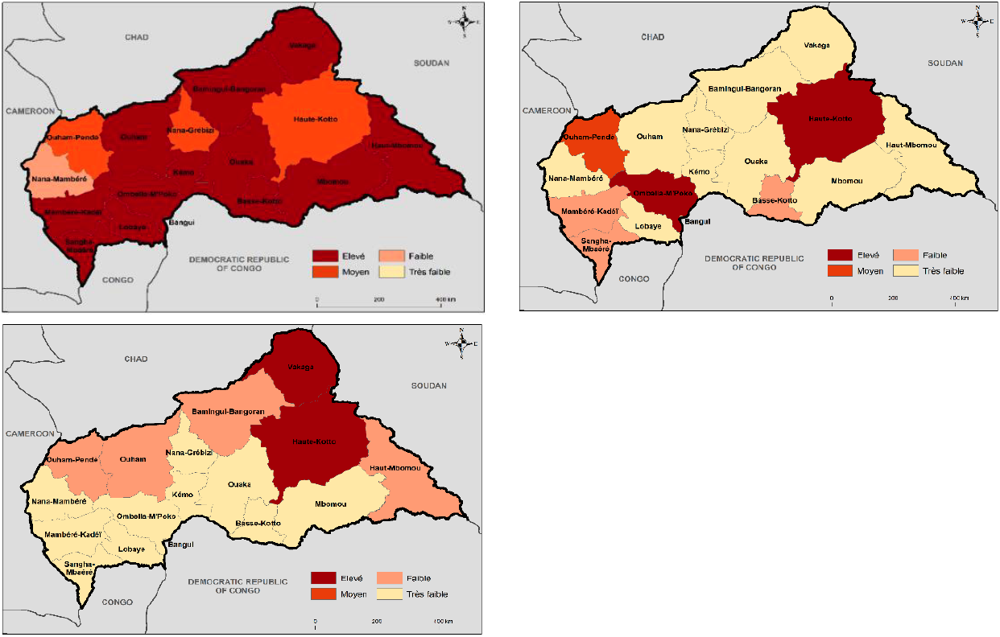
Figure 3: Risk of river, urban and drought flooding in CAR (source: ThinkHazard, 2021)
At the macro-economic level, these projected changes pose all the more risks to the outlook for economic development, as the recovery phase initiated in 2017 has experienced shifts in 2018 and 2020, in terms of GDP growth rate. This rate, which should see a rebound effect, with the completion of energy projects and the resumption of agricultural and mining activities, can only be maintained if the impact of climate variability and change does not compromise, among other factors, the national ambitions. Indeed, in Central Africa a warming of 1°C above the historical average is associated with a decrease of around 0.7 percentage point in GDP growth, ranging from -1.3 to -0.038.
Table 2 presents the GDP growth forecasts, and Figure 4 the potential effect of climate change on CAR's projected GDP9.
| 2017 | 2018 | 2019 | 2020 | 2021 | 2022 | 2023 | |
| Growth rate of GDP (%) |
4.5 |
3.8 |
4.5 |
1.7 |
2.1 |
5 |
5 |
Table 2: Evolution of the GDP growth rate of the CAR over the five-year period 2017-2021 (Source: MEPC, 2020)
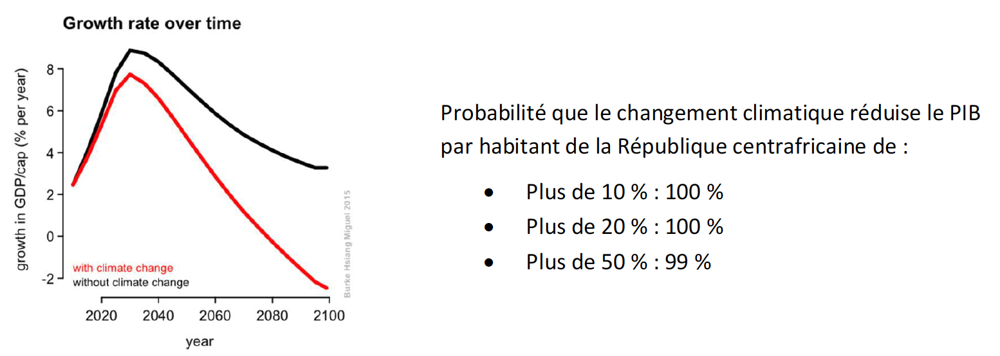
Figure 4: Economic impact of climate change on the Central African Republic (Source: Stanford, 2021)
| GgeCO2 | 3rd National Communication Series: 2010-2016 Reference year: 2010 |
|
Energy |
5151.99 |
|
Agriculture, forestry and other land use (AFOLU) |
4244.36 |
|
Waste |
643,779 |
|
Industrial Processes and Product Use (PIUP) |
0.078 |
|
Global emissions (excluding removals from forestry) |
10,040.20 |
|
Absorption AFOLU |
728 896 |
Table 3: Summary of emissions from the third national communication (Gg CO2e)
The table above shows the profile of greenhouse gas emissions (C02, CH4, N20, HFCs) in the following sectors: Energy; Agriculture, forestry and other land uses (AFOLU); industrial processes; Waste. The most significant emissions occur in the energy and AFOLU sectors, which represent nearly 94% of total volumes (see figure below).
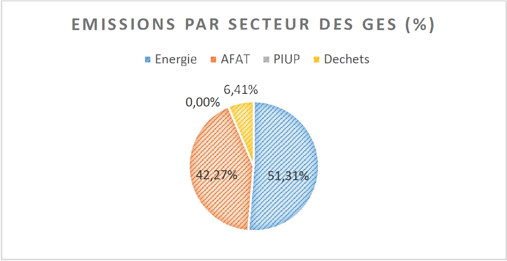
Figure 5: Breakdown of GHG emissions by sector (Source: Third National Communication)
It should be noted, however, that despite its significant emissions, the CAR's forest and grassland ecosystems remain an important carbon sink, totaling an estimated sequestration capacity of 728,896 GgeCO2.
On the same note, and based on the assumption of a potential reduction in short-term global warming of 0.4-0.5°C by 205010 by short-lived climate pollutants (SLCPs)11, their inventory has been completed12. Also, in addition to greenhouse gases (C02, CH4, N20, HFCs), the main sources of SLCP emissions remain the AFOLU and Energy sectors. The most emitting gases are, in order of importance: organic carbon (CO), suspended particles (PM10), and to a lesser extent nitrogen oxides (NOx), PM 2.5, non-volatile organic compounds methane (NMVOC).
| NOx | CO | NMVOC | SO2 | PM10 | PM2.5 | BC | OC | NH3 | TOTAL | |
| Emissions (t) |
10,786 |
107,740 |
15,894 |
527 |
17,609 |
11,956 |
1996 |
5,574 |
1,746 |
173,833 |
| % |
6.21% |
61.98% |
9.14% |
0.30% |
10.13% |
6.88% |
1.15% |
3.21% |
1.00% |
100% |
Table 4: Breakdown of SLCP emissions by source
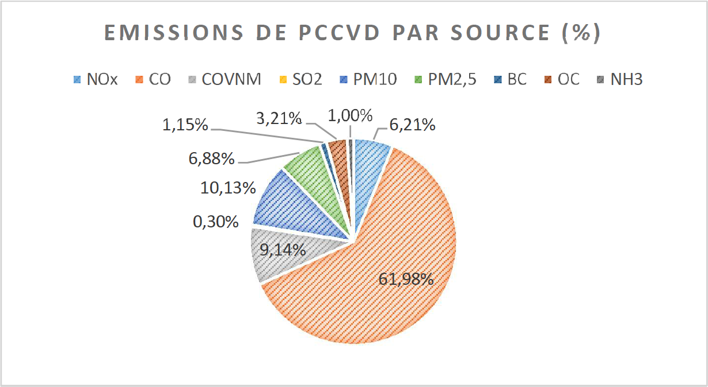
Figure 6: % of PCCVD emissions by source
CAR's mitigation vision is to promote low-carbon development, by reducing emissions by 10% to 25% by 2030 (unconditional and conditional scenario) compared to the trend scenario. It has several objectives: (i) the development of renewable energy resources and energy saving; (ii) promotion of agroecology; (iv) sustainable exploitation of natural resources; and (v) improvement of the living environment.
BAU SCENARIO OR TREND SCENARIO (2010-2030)
The trend scenario or Business as Usual (BAU) scenario for greenhouse gas emissions (C02, CH4, N20, HFCs) over the 2010-2030 cycle is shown below for the sectors: Energy; Agriculture, forestry and other land uses (AFOLU); industrial processes; Waste. CAR's emissions by 2025 and 2030 are respectively 14,141 GgeqCO2 and 17,644 GgeqCO2. The sequestration capacity on the same horizons remains high. It is respectively 730,714 GgCO2 and 733,607 GgCO2.
For SLCPs, organic carbon (CO) is expected to account for 71% of short-lived climate pollutant emissions.
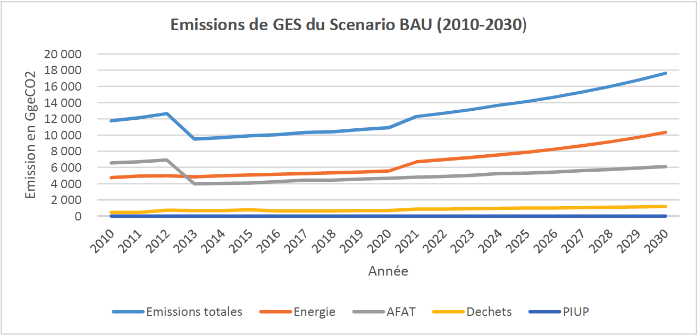
Figure 7: GHG emissions of the BAU scenario (2010-2030)
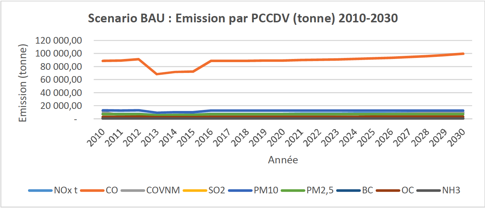
Figure 8: Emission of PCCVD-Trend scenario (2010-2030)
At the sectoral level, the mitigation measures set out below cover the activities for which investments are planned to be granted by the State (unconditional NDC), and the activities for which additional investment needs are required (conditional NDC ). For all the activities indicated below , the NDC will ensure equitable access to economic opportunities between genders and will target in particular young people and indigenous peoples in the areas where they are present.
ENERGY SECTOR
The National Energy Policy Document (DPEN) supports an objective of contributing to economic growth, improving the quality of life while respecting the environment by increasing the rate of access to electricity by 4 to 20% by 2025 and securing the energy supply. This ambition is broken down for each sub-sector: traditional energies, electricity, new and renewable energies, hydrocarbons, energy management and saving.
In line with these ambitions, the NDC of the CAR structures its intervention in the field of energy, according to the actions and objectives below.
| Traditional energy sub-sector | ||
| Goals | Planned actions | |
| Unconditional NDC |
Increase charcoal production yield by 10% in 2025 and 25% in 2030 Increase the share of coal in final consumption13 by 4% in 2025 and 12.5% in 2030 |
Promotion of improved carbonization techniques: Training; Recovery of industrial processing waste |
|
Penetration of improved stoves in households, of 5% in 2025 and 10% in 2030 (target: 50% of female heads of household) |
Improving the energy efficiency of the use of wood energy through the use of improved stoves: Development of prototypes; Production and distribution |
|
|
Households equipped in 2025 and 2030: Solar lighting: 5% and 50% Solar cookers: 5% in 2025 LPG: 10% in 2030 (target: 50% female heads of household) |
Modernization of domestic energy: Sector study; Pilot phase implementation |
|
| Conditional NDC |
Increase charcoal production yield by 10% in 2025 and 25% in 2030 Increase the share of coal in final consumption by 8% in 2025 and 25% in 203014 |
See NDC unconditional |
|
Penetration of improved stoves in households by 25% in 2025 and 50% in 2030 |
See NDC unconditional |
|
|
2% in 2025 and 15% in 2030 (target: 50% female heads of household) |
Reduce the impact of waste on ecosystems by promoting bio-digesters(% recovery of organic waste) |
|
|
Households equipped in 2025 and 2030: Solar lighting: 20% and 50% Solar cookers: 5% and 10% LPG: 25% in 2030 |
See NDC unconditional |
|
| Electricity sub-sector | ||
| Goals | Planned actions | |
| Conditional NDC |
10MW in 2030 |
Construction of micro hydropower plants: pre-feasibility and feasibility studies, commissioning, management and maintenance |
|
60MW in 2030 |
Construction of the Lobaye hydroelectric power station; pre-feasibility and feasibility studies, commissioning, management and maintenance |
|
|
40MW in 2030 |
Construction of solar power plants: pre-feasibility and feasibility studies, commissioning, management and maintenance |
|
| Energy management and saving sub-sector | ||
| Goals | Planned actions | |
| Inconditional NDC |
80% penetration rate in 2030 (target: 50% female heads of housework) |
Promote energy saving in households by popularizing low consumption lamps: Sector study; Pilot phase implementation |
All the measures thus taken will enable the CAR to influence the reference scenario (or trend scenario or “Business as Usual-BAU”) in the energy sector, respectively by -2.02% and -6, 53% in 2025, and -6.34 and -19.89% in 2030, under unconditional and conditional scenarios (see figure and table below).
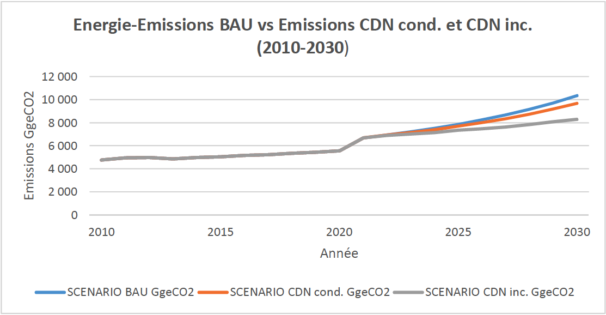
Figure 9: Emissions sector Energy-trend scenario, unconditional NDC and conditional NDC
| ENERGY | Emissions Trend scenario (GgeCO2) | Unconditional NDC emissions (GgeCO2) | % unconditional NDC reduction | Conditional NDC emissions (GgeCO2) | % conditional NDC reduction |
|
Horizon 2025 |
7,874 |
7,715 |
-2.02% |
7,360 |
-6.53% |
|
Horizon 2030 |
10,362 |
9,705 |
-6.34% |
8,300 |
-19.89% |
AGRICULTURE, FORESTRY AND OTHER LAND USE SECTOR (AFOLU)
The Strategy for Rural Development, Agriculture and Food Security (SDRASA) is structured around a vision for 2025 of Central African agriculture that is "productive, profitable, respectful of the environment, based on local initiatives and the concept of gender, creator of wealth, and the conditions for the emergence of a dynamic agricultural private sector”. It includes in its programming support for the management of natural resources and the development and dissemination of sustainable agricultural practices, as major axes of its policy. The SDRASA is supplemented by the National Agricultural Investment Program for Food and Nutritional Security (PNIASAN) which focuses, among other things, on the revival of food-producing sectors and the development of export sectors (cotton, coffee, palm oil).
In the field of forestry, the CAR has the ambition that "by 2035, forest ecosystems and the resources associated with them will be co-managed for the goods and services necessary for peace, sustainable development and harmonious, for the conservation of biological diversity and for the protection of the global environment". This vision is reflected in the National REDD+ Investment Framework 2020-2025 which aims to support the country in the economic and social development of the AFOLU sector while ensuring that impacts on forest ecosystems are avoided, minimized and compensated. .
In these areas, the objectives and mitigation measures are as follows:
| Agriculture sub-sector | |||||
| Goals | Planned actions | ||||
| Unconditional NDC |
Reduce slash-and-burn cultivation practices by 15% in 2025 |
Encourage sustainable agriculture by promoting agroecology: local diagnostics, implementation of new technical and new experiments |
|||
|
50,000 ha in 2030, based on agroforestry; including the maintenance of the agroforestry heritage of indigenous populations |
Increase the carbon sequestration capacity of ecosystems by promoting sustainable family orchards and palm groves |
||||
|
15,000 ha in 2030 (10,000 ha of coffee plantation, 5,000 ha of cocoa), based on agroforestry (targets: 50% female heads of household) |
Increase the carbon sequestration capacity of agricultural systems by reviving agroforestry coffee-cocoa farming without deforestation, which is agronomically, economically and environmentally efficient |
||||
| Conditional NDC |
Reduce slash-and-burn cultivation practices by 60% in 2030 |
See NDC unconditional |
|||
|
100,000 ha in 2030, based on agroforestry |
See NDC unconditional |
||||
|
15,000 ha in 2030 (10,000 ha of coffee plantation, 5,000 ha of cocoa), based on agroforestry |
See NDC unconditional |
||||
| Forestry and Land Use sub-sector | ||
| Goals | Planned actions | |
| Unconditional NDC |
12.5% of urban households having planted at least 3 trees in their plot by 2030 (target: 50% female heads of household) |
Support for the development of urban and peri-urban forestry(FUPU) |
|
Make renewable 12.5% of firewood harvesting in 2030 |
Development of agroforestry combining wood energy and agricultural production; Establishment of forest and agroforestry plantations in suitable areas |
|
|
Reduce wildfires by 6.25% in 2025 and 15% in 2030 |
Installation and maintenance of firewalls |
|
|
Restore 25% of post-mining sites annually in 2030 |
Reduce the impact of mining on national forest ecosystems by promoting good mining practices |
|
|
Preserve 20% of the sequestration capacities of APDS and PNMB by 2030 |
Capitalizing on the carbon potential of Dzangha-Sangha protected areas (APDS) and Mbaéré National Park Bodingue (PNMB) |
|
| Conditional NDC |
50% of urban households having planted at least 3 trees in their plot |
See NDC unconditional |
|
Make renewable 25% of collection of firewood 2030 |
See NDC unconditional |
|
|
Reduce wildfires by 25% in 2025 and 60% in 2030 |
See NDC unconditional |
|
|
Restore 50% of post-mining sites annually in 2030 |
See NDC unconditional |
|
|
Preserve 80% of the sequestration capacities of APDS and PNMB in 2030 |
See NDC unconditional |
|
The actions thus taken, in accordance with the priority orientations defined in the sectoral planning and programming instruments of the CAR in the fields of agriculture, forestry and land use, would make it possible to reduce greenhouse gas emissions. according to the unconditional scenario of -2.76% and -4, 33% respectively in 2025 and 2030; and according to the conditional scenario of -11.03% and -17.30% respectively in 2025 and 2030 compared to the trend scenario (see figure and table below).
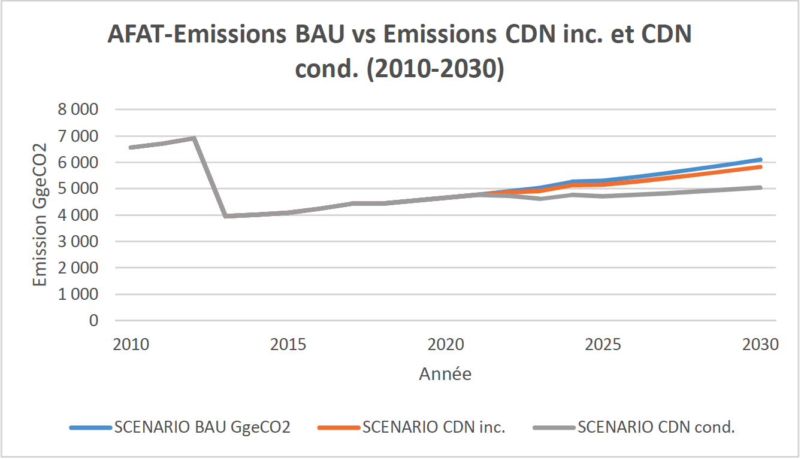
Figure 10: AFOLU sector emissions-trend scenario, unconditional NDC and conditional NDC
| AFOLU/Emissions | Emissions Trend scenario (GgeCO2) | Unconditional NDC emissions (GgeCO2) | % NDC reduction unconditional | NDC broadcasts conditional(GgeCO2) | % NDC reduction conditional |
|
Horizon 2025 |
5,293 |
5,147 |
-2.76% |
4,709 |
-11.03% |
|
Horizon 2030 |
6,106 |
5,842 |
-4.33% |
5,049 |
-17.30% |
WASTE SECTOR
The national water and sanitation strategy document pursues, at the level of the sanitation sub-sector, several sub-objectives, including the improvement of the living environment and the health of the population; the development of action strategies in terms of hygiene and solid15, liquid and excreta waste in rural and urban areas. This ambition continues within the framework of the National Water Policy (2020-2030) which has included in its strategic axes “access for all to water and sanitation by 2030”. In the continuity of such an approach, the rational and sustainable management of waste remains a major challenge for municipalities in general, and urban ones in particular, in a context of increasing urban population estimated at 41.4% of the population,
In this area, the objectives and mitigation measures relate to the treatment and recovery of municipal waste. The examination, treatment and analysis of the proposed mitigation measures show that in the context of the CAR, they are (i) either likely to generate methane emissions which are added to the emissions of the trend scenario, (ii ) or the reduction percentage remains marginal (less than 1%) compared to the costs induced by the action. Thus, no measure is proposed under this component.
INDUSTRIAL PROCESSES AND PRODUCT USE SECTOR (PIUP)
The legal framework for national climate action is mainly based on Law No. 07/018 of December 28, 2007 on the Environmental Code, which enshrines air protection, as one of its priority interventions. The country has also ratified the Vienna Convention for the Protection of the Ozone Layer and the Montreal Protocol which aims for the reduction and complete elimination of substances that deplete the ozone layer.
In view of the commitments made by the country in this area, the NDC mitigation measures in this area are as follows:
| Ozone sub-sector | ||
| Goals | Planned actions | |
| NDC |
Reduce the use of fluorinated gas appliances by 6.25% in 2025 and 12.5% in 2030 |
Reduce fluorinated gas emissions |
| Conditional NDC |
Reduce the use of fluorinated gas appliances by 25% in 2025 and 50% in 2030 |
Reduce fluorinated gas emissions |
The implementation of actions by 2025 and 2030 will enable the CAR to reduce greenhouse gas emissions, in particular hydrofluorocarbons (HFCs), according to the unconditional scenario of -3.91% and -6, 04% respectively in 2025 and 2030; and according to the conditional scenario of -15.65% and -24.16% respectively in 2025 and 2030 compared to the trend scenario (see figure and table below).
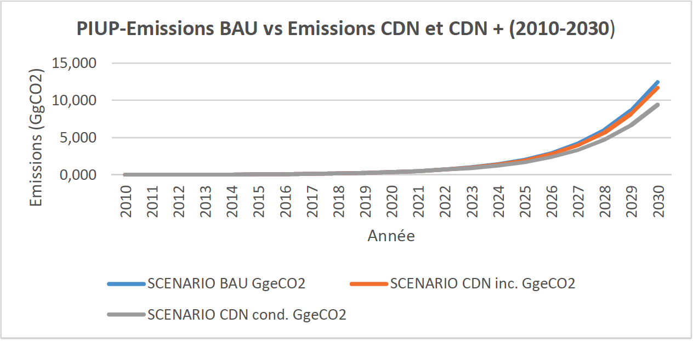
Figure 11: PIUP-Trend Scenario Sector Emissions, Unconditional NDC and Conditional NDC
| PIUP | Emissions Trend scenario (GgeCO2) | Unconditional NDC emissions (GgeCO2) | % NDC reduction unconditional | Conditional NDC emissions (GgeCO2) | % NDC reduction conditional |
|
Horizon 2025 |
2,026 |
1,947 |
-3.91% |
1,709 |
-15.65% |
|
Horizon 2030 |
12,466 |
11,713 |
-6.04% |
9,455 |
-24.16% |
GLOBAL EMISSIONS AND ABSORPTIONS BY 2025 AND 2030: TREND SCENARIO, UNCONDITIONAL NDC AND CONDITIONAL NDC
All the aggregated measures lead the CAR to a level of greenhouse gas reduction under the unconditional scenario of -9.03% and -11.82 respectively in 2025 and 2030. Under the assumption of support from the international community, these reductions will reach -14.64% and -24.28 in 2025 and 2030 respectively.
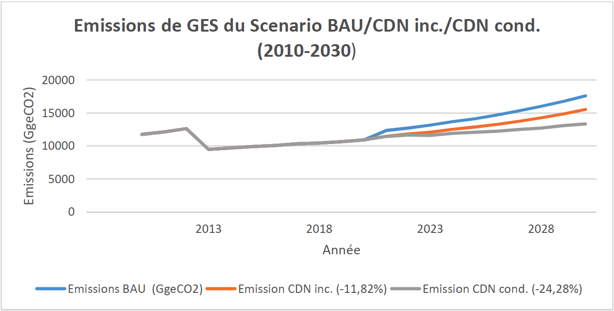
Figure 12: Global Emissions-Trend Scenario, Unconditional NDC and Conditional NDC
| Emissions | Emissions Trend scenario (GgeCO2) | Unconditional NDC emissions (GgeCO2) | % NDC reduction unconditional | Conditional NDC emissions (GgeCO2) | % NDC reduction conditional |
|
Horizon 2025 |
14,141 |
12,864 |
-9.03% |
12,070 |
-14.64% |
|
Horizon 2030 |
17,644 |
15,558 |
-11.82% |
13,359 |
-24.28% |
The measures thus taken have both an inference on the decline in greenhouse gas emissions, but also on the improvement of the level of carbon sequestration by biomass and soils. This absorption capacity in 2030 is respectively 735,140 GgCO2 and 739,086 GgCO2 under the unconditional scenario and under the conditional scenario.
| removals | CO2 sequestered Trend scenario (GgeCO2) | NDC sequestered CO2 unconditional (GgeCO2) | % increase NDC unconditional | CO2 sequestered NDC conditional (GgeCO2) | % NDC increase conditional |
|
Horizon 2025 |
730 714 |
732,036 |
+0.18% |
735 763 |
0.69% |
|
Horizon 2030 |
733 608 |
735 140 |
+0.21% |
739,086 |
+0.75% |
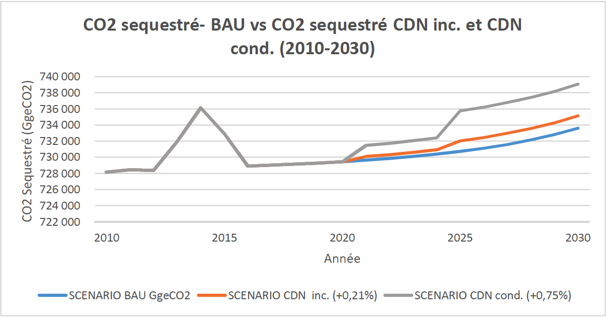
Figure 13: Overall Absorptions-Trend Scenario, Unconditional NDC and Conditional NDC
For PCCVDs, emission reductions by gas are as follows.
| Horizon 2025 | Horizon 2030 | |||||||||
| Cumulative emissions (ton) | NDC | % | NDC+ | % | Cumulative emissions (ton) | NDC | % | NDC+ | % | |
| NOx |
61,685 |
58440 |
-5.26 |
57346 |
-7.03 |
68480 |
50039 |
-26.93 |
44945 |
-34.37 |
| CO |
577 232 |
537033 |
-6.96 |
533620 |
-7.56 |
614099 |
382793 |
-37.67 |
361758 |
-41.09 |
| NMVOC |
10388 |
97569 |
-2.81 |
95,783 |
-4.59 |
117047 |
101052 |
-13.67 |
90019 |
-23.09 |
| SO2 |
2592 |
2343 |
-9.63 |
2341 |
-9.69 |
2573 |
1158 |
-54.97 |
1150 |
-55.31 |
| PM10 |
94993 |
88804 |
-6.52 |
87944 |
-7.42 |
98330 |
63212 |
-35.71 |
57920 |
-41.10 |
| PM2.5 |
67208 |
63659 |
-5.28 |
62816 |
-6.53 |
70846 |
50821 |
-28.27 |
45638 |
-3558 |
| BC |
12101 |
11760 |
-2.83 |
11517 |
-4.83 |
13048 |
11102 |
-14.91 |
9628 |
-26.21 |
| OC |
31862 |
30312 |
-4.86 |
29886 |
-6.20 |
33922 |
25210 |
-25.68 |
22572 |
-33.46 |
| NH3 |
10831 |
10574 |
-2.37 |
10358 |
-4.37 |
11829 |
10389 |
-12.17 |
9040 |
-23.57 |
Table 5: Reduction of SLCP emissions in unconditional and conditional scenario
The national vision of the CAR on climate change is that "by 2030, the Central African Republic is part of a dynamic of sustained, equitable and sustainable socio-economic development, because integrating the challenges of climate change in all sectors social and productive which will allow an improvement of the general well-being of its population”.
In the continuity of such a vision, and in coherence with the adaptation objectives of the Paris Agreement, the SDGs and the priority orientations defined by the Government, the objective aimed at in terms of adaptation is "to improve by 2030 the resilience of communities and ecosystems in the socio-economic sectors most vulnerable to the adverse effects of climate change”.
At the national level, vulnerability is more marked in areas included in the National Plan for Recovery and Consolidation of Peace 2017-2021 (RCPCA) as Government priorities. These are: Agriculture, Energy, Forestry, Water Resources, Health, Land Use Planning, Infrastructure and Housing. It is exacerbated by political insecurity and inequalities, in a context marked by an amplification of gender inequality, the index of which is considered one of the highest in the world. The country is indeed ranked 159th out of 162 countries according to the 2019 United Nations Gender Inequality Index (GII). This inequality has increased in recent decades due to successive crises, with an index that has increased from 0.743 in 1995 to 0.680 in 2019.
The table below presents in detail the sectoral impacts and vulnerabilities, in relation to the expected effects of climate change.
|
Horizon |
203016 |
|
Temperature change (°C) |
0.2°C 0.4 0.6 0.8 1 1.2 1.4 1.6 1.8 |
|
Precipitation anomaly (mm) |
-20 -15 -10 -5 0 +5 +10 +15 +20 |
|
National economy |
GDP decline from -2.6% to -3.4% in 203017. Worsening incidence of poverty. |
|
Agriculture and food security |
|
|
Forestry |
|
|
Water resources |
|
|
Energy |
|
|
Health |
|
|
Infrastructures and habitat/Territorial planning |
|
Table 6: Sectoral Impacts and Vulnerabilities
To achieve the general objective in terms of adaptation, intermediate objectives and measures have been identified. They are aligned with the SDGs, the RCPCA, the National Adaptation Plan, and the country's third national communication.
OBJECTIVE 1: GUARANTEE THE SECURITY OF AGRO-SYLVO-PASTORAL SYSTEMS AND WATER RESOURCES BY CAPTURING OPPORTUNITIES ASSOCIATED WITH PROJECTED CLIMATE VARIATIONS
Alignment with the PNA: National Agricultural Investment Program, Food Security and Resilience to Climate Change
| Option | Targets/Baseline: 2010 | Actions and measures to achieve targets |
| Agriculture and Livestock | ||
|
Development of sustainable, intensive and diversified agriculture, and promotion of sustainable land management actions integrating youth, women and indigenous peoples |
|
Disseminate effective cultural technical packages likely to induce a sustainable improvement in productivity and the preservation of the environment in a context of climate change (resistant varieties) |
|
Mainstream Land Degradation Neutrality (LDN) into national priorities; ensure agriculture-livestock integration in degraded cropping areas; promote agroforestry systems for sustainable soil management; Ensure the reforestation of areas degraded by fodder crops in degraded pastoral areas. |
|
|
See Mitigation-AFOLU |
|
|
Development of agricultural research adaptive to climate change |
|
Strengthening of technical capacities (varietal development, use of impact models for the simulation of productivity and production by scenario); Strengthening of ICRA's material capacities (simulation models, laboratories, seed multiplication centers) |
|
Prevention and Management of the effects of exceptional climatic occurrences on the agro-sylvo-pastoral system |
|
Existence of a functional system for hydro-meteorological and seasonal forecasts |
|
Improved climate resilience of communities and traditional pastoral systems |
|
Development of a zoning of natural resources adapted to the current and projected climatic zoning, Rehabilitate, build water reservoirs in certain livestock areas |
|
Installation of plots of fodder crops, improved and maintained water points; Ensure the framework for supplying pastoral organizations with vaccines and veterinary drugs; Support to vulnerable households for the development of IGA |
|
| Forestry | ||
|
Restoration of deforested landscapes, through the reforestation of multi-sage species to reduce the sensitivity and exposure of forests to climatic hazards |
|
Ensure the reforestation of degraded areas through urban, peri-urban and community forestry; Reduce the pressure on the use of wood as an energy source through the Modernization of domestic energy (see mitigation) |
|
Regulation of artisanal exploitation of timber and wood energy and measures to reduce pressure on resources |
|
|
|
|
|
|
Promoting agroforestry to reduce climate risks and diversify economic options |
|
See Mitigation-AFOLU Strengthening the technical and material capacities of stakeholders on agroforestry; Establish incentives: quality seeds, nurseries, training and extension materials, identification of product markets. |
|
Support and formalization of the non-timber forest products (NTFP) sector and circuit to diversify food supply sources in a climate crisis situation |
|
Information, training, Installation of multiplication nurseries and processing units; setting up collection and storage depots; Organization of the NWFP marketing circuit |
Alignment with the NAP: Integration of climate change adaptation into national and regional water resources management; Strengthening the resilience of rural and urban areas to climate change through better management of community water resources
| Option | Targets/Baseline Year: 2010 | Actions and Measures to Achieve Targets |
| Water Resources, Water and Sanitation Services | ||
|
Improvement of the governance framework of the water and sanitation sector, consistent with the current and future vulnerability of water resources to climate change |
|
|
|
Establishment of a monitoring and surveillance system to ensure the security of water21 and uses in the context of climate variability and change |
|
|
|
Strengthening the institutional capacities of municipalities in the collection, management and recycling of solid waste |
|
Benchmarking; development of training modules on collection, recovery; implementation of training, acquisition of necessary equipment |
|
Development of drinking water supply systems, associated with the promotion of water use efficiency |
|
Reinforcement of SODECA facilities; Extension of the network in major cities; Installation of DWS systems, boreholes |
OBJECTIVE 2: ADAPT THE TERRITORY AND ENERGY SYSTEMS TO CURRENT AND FUTURE CLIMATE CHANGES
| Option | Targets/Baseline: 2010 | Actions and measures to achieve targets |
| Territory Development | ||
|
Conformation of the uses of land and natural resources, by a legal and regulatory system that integrates the current and future climate |
|
Participatory mapping of uses and rights of use; Technical studies on land potential and allocation; Geo-referenced database of specific risks and resources
|
| Option | Targets/Baseline: 2010 | Actions and measures to achieve targets |
| Energy | ||
|
Promotion of improved carbonization of wood waste from logging |
|
|
|
Rural electrification |
|
|
|
Regulation and fight against the artisanal exploitation of timber and wood energy |
|
|
|
Promote reforestation of degraded areas with fast-growing plants for use as fuelwood |
|
|
OBJECTIVE 3: INFORM AND PREPARE INFRASTRUCTURES AND HABITATS, HEALTH SYSTEMS, TO CLIMATE RISKS, BY IMPROVING AND PRODUCING EVIDENCE IN THESE FIELDS
| Option | Targets/Baseline: 2010 | Actions and measures to achieve targets |
| Housing and Infrastructure | ||
|
Improve knowledge on habitat and infrastructure vulnerability and identification of adaptation options |
|
Modeling of climate change; assessment of risks, impacts and vulnerabilities, and adaptation options; integration into sector planning |
|
Promotion of a sustainable housing construction model, in connection with the sedentarization of AKA indigenous populations in a context of climate change |
|
Achievement of Free, Prior and Informed Consent with Indigenous peoples on sedentarization and sustainable habitats |
|
Improve stormwater drainage systems to anticipate the effects of recurrent floods in the most vulnerable cities |
|
Drainage infrastructure, restructuring, relocation. |
| Public health | ||
|
Improve knowledge on the vulnerability of the health sector to climate change and the identification of adaptation options |
|
Modeling of climate change; assessment of risks, impacts and vulnerabilities, and adaptation options; integration into sector planning |
|
Promotion of basic hygiene and sanitation |
|
Capacity building of actors and harmonization of the CLTS approach |
|
Development of a monitoring system for prevention and control against epidemics and climate-sensitive diseases (malaria, cholera, meningitis, etc.) |
|
Identify the most vulnerable areas; Set up tools for processing and analyzing data on environmental risks and epidemiological trends; Identify or Establish the information dissemination system |
CROSS-CUTTING MEASURES
Alignment with the NAP: Establishment of an integrated early warning system
| Option | Targets/Baseline: 2010 | Actions and measures to achieve targets |
| Cross-sectional measures | ||
|
Modeling of climate change and evolution scenarios for CAR |
|
Institutional support for the instrumentation and production of climate information |
|
Disaster risk monitoring, rapid post-disaster needs assessment (PDNA), and operations management |
|
Strengthening the technical and material capacities of the DGPC (training and equipment); Establishment of a cross-sector risk management platform |
|
Special Adaptation Program for Indigenous Peoples |
|
Specific assessments of needs and CLIP, reinforcement of agricultural practices resilient to CC, AEP system, construction of sustainable habitats, sustainable exploitation of NWFPs. |
|
Climate Education |
|
Capacity building for teacher-researchers, Curriculum development, Validation, Testing, Operationalization |
|
Resource mobilization |
|
Formulation of an investment and resource mobilization plan, Capacity building on climate finance |
The funding needs of the NDC over the decade 2021-2030 are estimated at $1.764 billion, including $1.321 billion for mitigation and $443.872 million for adaptation. CAR's contribution from its domestic resources is $280.44 million (or 16%). The expected contribution from international partners is $1.483 billion (84%).
MITIGATION
| Sector | Unconditional Cost ($Millions) | Conditional Cost ($Millions) | Total Cost ($Millions) |
|
Energy |
58 |
476 |
534 |
|
AFOLU |
178 |
606 |
784 |
|
PIUP |
0.29 |
0.15 |
0.44 |
|
Cross-sectional measures |
0.23 |
2.07 |
2.3 |
|
TOTAL |
236 |
1084 |
1321 |
ADAPTATION
| Sector | Unconditional Cost ($Millions) | Conditional Cost ($Millions) | Total Cost ($Millions) |
|
Agriculture and Livestock |
12,377 |
111,396 |
123,774 |
|
Forestry |
0.0451 |
22,524 |
22,570 |
|
Water resources, water and sanitation services |
13.05 |
117.45 |
130.5 |
|
Territory Development |
0.187 |
1,689 |
1,876 |
|
Energy |
See Attenuation |
See Attenuation |
See Attenuation |
|
Housing and Infrastructure |
8.22 |
73.98 |
82.2 |
|
Public health |
0.15 |
1.35 |
1.5 |
|
Cross-cutting measures including communication |
8,332 |
74,995 |
83,328 |
|
TOTAL |
44,387 |
399,484 |
443,872 |
The implementation of certain adaptation and mitigation actions requires the use of technologies. Technology transfer in this area will include both capacity building and installation of equipment.
|
Component |
Technology Need |
Need for capacity building |
|
Mitigation |
|
Use of geospatial technologies for ecosystem monitoring Conservation tillage Agroecology Management of persistent organic pollutants (POPs) Management of industrial standards Complete definition of the baseline of adaptation and mitigation measures |
|
||
|
||
|
||
|
||
|
||
|
||
|
||
|
||
|
||
|
Adaptation |
Non-Timber Forest Products (NTFPs): processing technology and conservation of wild pepper |
Agroforestry Climate scenario and projection Conduct of vulnerability assessments Development of curricula integrating climate change at primary and secondary level |
|
Meteorological Instrumentation Devices |
||
|
Simplified no-till technology or Simplified Cultivation Techniques (TCS) |
||
|
Drought resistant crops |
||
|
Materials and tools for monitoring bushfire alerts using remote sensing |
The proposed MRV system covers the components of mitigation, adaptation, and finance. It integrates the SDGs across the board (CAR has selected six priority SDGs to follow: 4, 8, 10, 13, 16 and 17), technology transfer and capacity building.
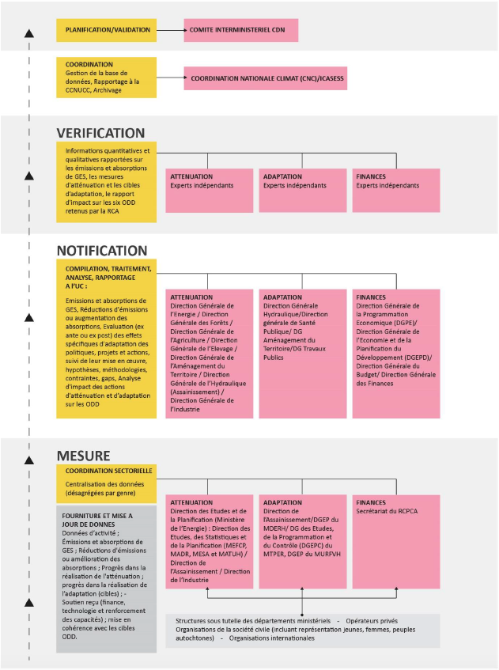
| 1. | Quantifiable information on the benchmark (including, if applicable, a base year) | |
|
(a) |
Reference year(s), base year(s), reference period(s) or other starting point(s) |
Reference year for emissions projections: 2010 Reference year for the BAU emission target: 2030 |
|
(b) |
Quantifiable information on the benchmarks, their values ​​in the base year(s), reference years, reference periods or other starting points and, where applicable, the target year |
The projected emission level in 2030 is 17,643 GgeCO2. |
|
(d) |
Target relative to the reference indicator, expressed numerically, for example as a percentage or amount of the reduction |
The reduction in GHG emissions is 24.28% compared to the reference level (BAU) in 2030. |
|
(e) |
Information on the data sources used to quantify the reference point(s) |
CAR's third national communication was used to quantify the GHG baseline The CAR's integrated inventory of short-lived climate pollutants was used to quantify the level of benchmark for short-lived climate pollutants (SLCPs) |
|
(f) |
Information on the circumstances under which the country Party may update the values of the reference indicators |
The BAU scenario has been updated based on the final data from the latest inventories available (GES and PCCVD). The CAR plans to update the GHG inventory during the first biennial report scheduled for the year 2024. An emissions measurement, reporting and verification (MRV) tool will be developed and will be used to update the inventory. Benchmarks may change following the implementation up to date. |
| 2. | Deadlines and/or implementation periods | |
|
(a) |
Implementation schedule and/or period, including start and end dates, in accordance with any other relevant decision adopted by the Conference of the Parties serving as the meeting of the Parties to the Agreement Paris (CMA) |
January 1, 2022-December 31, 2030 |
|
(b) |
Whether it's a one-year or multi-year goal, as appropriate |
One-year target (2030). |
| 3. | Range and coverage | |
|
(a) |
General description of the target |
The proposed mitigation measures will enable the CAR to reduce its GHG emissions compared to the trend scenario. The level of GHG reduction in 2030 is in absolute value of 4284.42 GgeCO2, and in relative value of 24.28%. The level of PCCVD reduction varies from -13.67% to -55.31% depending on the type of pollutant by 2030. |
|
(b) |
Sectors, gases, categories and pools covered by the nationally determined contribution, including, where applicable, in accordance with the guidelines of the Intergovernmental Panel on Climate Change climate (IPCC) |
Greenhouse gases: CO2, CH4, N2O, HFCs Short-lived climate pollutants: PM2.5, PM10, CN, CO, NOx, SO2, NH3, NMVOCs |
|
(c) |
How the country Party has considered paragraphs 31(c) and (d) decision 1/CP.2123 |
The revised NDC includes all categories of relevant anthropogenic emissions or removals, consistent with the 2006 IPCC Guidelines. Compared to the first NDC, the coverage of the revised NDC is extended to PCCVDs. |
|
(d) |
Mitigation co-benefits resulting from the Parties' adaptation actions and/or economic diversification plans, including the description of specific projects, measures and initiatives of the Parties' adaptation actions and/or economic diversification plans |
Mitigation co-benefits can be expected from the implementation of the following adaptation measures: Restoration through reforestation of multipurpose species of deforested landscapes; Regulation of artisanal exploitation of timber and fuelwood and measures to reduce pressure on resources; Promotion of agroforestry for the reduction of climate risks and the diversification of economic options. |
| 4. | Planning process | |
|
(a) |
a) Information on the planning processes the country Party has undertaken to prepare its NDC and, if available, implementation plans |
The process was led by the National Climate Coordination, with the support of the UNDP Climate Promise initiative. A Steering Committee (CoPIL) representative of all parties (including representatives of women's, youth and indigenous peoples' organizations), created by ministerial decree, served as an Intersectoral Technical Working Group responsible for supporting the process of formulation and validation of deliverables at the different stages. Consideration of PCCVDs, in addition to greenhouse gases, is a good practice on which other countries Parties could draw inspiration. |
|
(c) |
How the country Party's preparation of its NDC has been informed by the results of the global stocktake, in accordance with Article 4(9) of the Paris Agreement |
CAR's first NDC was submitted in 2016. In accordance with Article 4, paragraph 9, of the Paris Agreement, this second NDC is being developed five years after the first. As the global stocktake is scheduled for 2023, the revision of the NDC was inspired by the September 2021 summary report of the United Nations Framework Convention on Climate Change (UNFCCC). |
| 5. | Assumptions and methodological approaches, including those for estimating and accounting for anthropogenic greenhouse gas emissions and, where relevant, removals | |
|
(a) |
Assumptions and methodological approaches used to account for anthropogenic emissions and removals of greenhouse gases corresponding to the NDC of the country Party, in accordance with paragraph 31 of decision 1/CP.21 and the accounting guidelines adopted by the Meeting of the Parties to the Paris Agreement (CMA) |
Emissions and removals are reported in accordance with IPCC guidelines. There is methodological consistency between, with regard to the reference level, between the 3rd national communication and the NDC CAR intends to report on the GHG inventory in accordance with Decision 18/CMA.1. It will report on progress made in implementing the NDC by December 31, 2024. |
|
(d) |
IPCC methodologies and metrics used to estimate greenhouse gas emissions and removals; |
IGES tool: Tier 1 Method (GHG Inventory Manual 1996, revised version and 2006); Air Pollution Emissions Inventory Tool EMEP / /CORINAIR Reference year: 2010 Reference data: Third National Communication |
|
(i) |
How are reference indicators, reference levels constructed? |
The national inventory report from the third national communication was used to build the reference scenario. It is combined with a top-down statistical method of extrapolation from the average annual growth rate, and growth scenarios broken down into sectoral policy instruments. They can be improved and/or revised in future processes by making more data available and confirming or correcting the average annual growth rates. |
| 6. | How the country Party considers its NDC to be fair and ambitious in light of its national situation | |
|
(a) |
How the country Party considers its nationally determined contribution to be fair and ambitious in light of its national circumstances; |
Despite the socio-economic situation of the country (188th country out of 189 in the HDI), the CAR aims to contribute to the reduction of greenhouse gas emissions at the global level, according to the principle of common but differentiated responsibility. The revised NDC covers more sectors and gases. It presents, in relative value, higher ambitions compared to the previous one (24.28% for the revised NDC and 5% for the first NDC), and less important in absolute value: 4,284.42 GgeCO2 against 5,500 GgeCO2 for the first NDC. This difference is due to the revision of the BAU scenario which is more realistic, as it is based on more data and more sectors. The country is a major carbon sink (728,896 GgeCO2), which it aims to protect and advance through the proposed sequestration measures. Better still, from a conceptual point of view, it introduces a new approach which could be of interest to other countries towards low carbon development. |
|
(b) |
Equity considerations, including equity reflection |
See 6 (a) |
|
(c) |
How the country Party has dealt with Article 4(3) of the Paris Agreement24 |
See 4(c). Same for 6 (c) and 6 (d) |
| 7. | How the NDC contributes to achieving the objective of the Convention as set out in its Article 2 | |
|
(a) |
How the Nationally Determined Contribution contributes to achieving the objective of the Convention as set out in its Article 2 |
See 4(c). |
|
(b) |
How the Nationally Determined Contribution contributes to Article 2(1)(a) and Article 4(1) of the Paris Agreement |
See 4(c). CAR's revised NDC relies on an improved and more robust database to estimate baseline scenario emissions and removals and reductions induced by mitigation measures |
Table 7: Information to facilitate clarity, transparency and understanding
WB Climate Change Knowledge Portal (CCKP, 2021). Central African Republic URL: https://climateknowledgeportal.worldbank.org/country/central-african-republic/climate-data-historical↩
GERICS (2015). Climate-Fact-Sheet, Central African Republic↩
Those of 2009 around the urban areas of the capital, Bangui, cost 6 million dollars, and caused losses estimated at 2.6 million dollars.↩
The value in bold indicates the range (10th-90th percentile) and the values in parentheses indicate the median (or 50th percentile). For heavy rains and dry periods, the values correspond to the 5th and 95th percentile (90% in the middle).↩
Ibid.↩
Ibid.↩
Confirmed by the 7th report of the IPCC. See: IPCC, 2021: The Physical Science Basis. Contribution of Working Group I to the Sixth Assessment Report of the Intergovernmental Panel on Climate Change. Regional fact sheet – Africa.↩
AfdB. Climate Change Impacts on Africa’s Economic Growth. 2019.↩
This effect manifests itself above all during dry years, in particular on agricultural GDP, and indirectly on national GDP: Sonwa, D. et al. (2014).↩
UNEP & WMO (2011) Integrated Assessment of Black Carbon and Tropospheric Ozone. UNON/publishing Services Section/Nairobi, ISO 14001:2014↩
These are particulate matter (PM2.5 and PM10), black carbon (CN), organic carbon (CO), nitrogen oxides (NOx), sulfur dioxide (SO2), ammonia (NH3), and non-methane volatile organic compounds (NMVOC).↩
MEDD (2020) Integrated inventory of short-lived climate pollutants, air pollutants and greenhouse gases of the Central African Republic↩
As a replacement for firewood↩
These percentages include the share of unconditional↩
Solid waste management falls under municipal jurisdiction↩
The proposed mode of presentation does not mean that there is a correspondence between the value of the temperature and that of the precipitation on the same axis↩
AfdB. Climate Change Impacts on Africa’s Economic Growth. 2019. Scenarios RCP 2.6 et RCP 8.5↩
Degradation rate between 2000 and 2010↩
CPI averages between 2016 and 2021.↩
Joint needs assessment report (September 2009) on urban flooding in Bangui↩
Availability of the resource in sufficient quantity and quality to guarantee socio-economic development, livelihoods, health and ecosystems↩
According to Decision -/CMA.1: Further guidance on the mitigation section of decision 1/CP.21↩
Parties shall endeavor to include all categories of anthropogenic emissions or removals in their nationally determined contributions and, where a source, sink or activity is considered, continue to include it↩
Each Party's subsequent NDC will represent a progression from the previous NDC and correspond to its highest possible level of ambition, taking into account its common but differentiated responsibilities and respective capacities, taking into account different national contexts↩